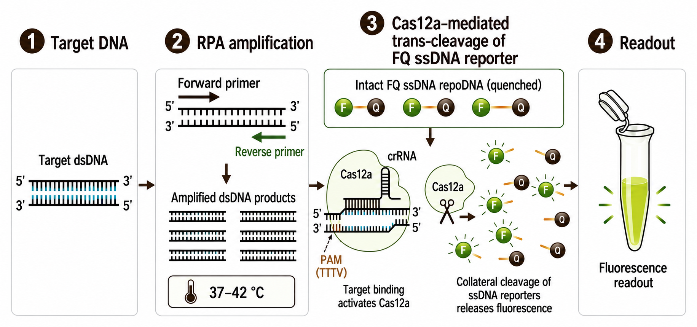

1. Background and Challenges
Respiratory infectious diseases remain a major global public health challenge due to their high transmissibility, overlapping clinical symptoms, and potential to cause severe complications and outbreaks. Lower respiratory infections are the leading infectious cause of death worldwide, particularly affecting children under five and older adults [1]. Because different respiratory pathogens often produce similar early symptoms, such as fever, cough, and sore throat, clinical diagnosis alone is insufficient for accurate pathogen identification. Rapid and reliable detection is therefore essential for timely treatment, infection control, and effective disease management, particularly in childcare facilities, eldercare institutions, and primary healthcare settings.
This project focuses on five clinically important respiratory pathogens: respiratory syncytial virus (RSV), human metapneumovirus-B (hMPV-B), Streptococcus pneumoniae (SPN), Bordetella pertussis (BP), and Haemophilus influenzae (HI). RSV is a major cause of severe respiratory infections in young children and older adults [2,3], while hMPV contributes to respiratory disease in vulnerable populations, particularly older adults [4]. Among bacterial pathogens, SPN contributes substantially to severe lower respiratory infections and can interact with viral infections [1,5]; BP is highly transmissible and poses serious risks to young infants [6]; and HI can cause respiratory and invasive infections, with antimicrobial resistance further complicating clinical management [1,7]. Together, these pathogens represent diverse but clinically overlapping respiratory infection risks, highlighting the need for simultaneous and accurate identification.
Although conventional molecular diagnostic methods, such as qPCR and RT-qPCR, provide high sensitivity and specificity, they typically require specialized equipment, trained personnel, and complex sample-processing procedures [8,9]. Rapid antigen tests offer simpler operation but may have limited sensitivity, particularly at low pathogen loads [9]. Emerging isothermal amplification and multiplex detection technologies offer promising alternatives, yet challenges remain in assay specificity, multiplex interference, sample preparation, contamination prevention, and integrated quality control [8]. Therefore, there is a critical need for a rapid, sensitive, specific, and easy-to-use multiplex point-of-care testing (POCT) system that can reliably detect multiple respiratory pathogens in resource-limited and decentralized healthcare settings.
2. Engineered (RT-)RPA-CRISPR/Cas12a solution
To address the technical challenges and product limitations described above, we first focused on recombinase polymerase amplification (RPA), an effective isothermal amplification method characterized by a moderate reaction temperature, a relatively short amplification time, and low equipment dependence, making it suitable for primary-level screening and on-site testing. However, the amplification efficiency and specificity of an RPA system depend strongly on primer sequences, the local structure of the target sequence, and reaction conditions. Poor primer design or complex target-sequence secondary structures may reduce amplification efficiency and lead to background amplification and the accumulation of non-specific products, making it difficult for RPA alone to achieve both high sensitivity and high specificity.
The CRISPR/Cas12a system provides a second sequence-recognition step to address these limitations. Guided by a crRNA, LbCas12a specifically recognizes the target double-stranded DNA and then activates trans-cleavage activity, cleaving a single-stranded DNA reporter to generate a fluorescent or visual signal. Placing this step after RPA amplification can reduce the risk of false positive results caused by nonspecific amplification products. Recent studies have shown that RPA coupled with CRISPR/Cas12 can support multi-target respiratory-pathogen detection in portable systems, while extraction-free one-pot RPA-Cas12a systems can simplify bacterial pathogen testing workflows [10,11].
For RNA viruses, an additional reverse transcription (RT) step can be incorporated to convert viral RNA into complementary DNA (cDNA), enabling subsequent amplification and detection using our engineered RPA-CRISPR system.

On this basis, our project is designed for kindergartens and eldercare institutions. It integrates (RT-)RPA with LbCas12a trans-cleavage for multi-pathogen detection and includes the parallel development of a portable fluorescence-reading prototype. Instead of simply combining two technologies, the system uses RPA for rapid target increase and Cas12a for sequence-specific confirmation, while independent reaction channels and digital result recording make multi-target results easier to interpret.
2.1 Target pretreatment and (RT-)RPA amplification
Specific primers are designed against conserved gene fragments of the five pathogens. Viral RNA is reverse-transcribed and enters the RPA workflow together with bacterial DNA for isothermal amplification at about 37-43 °C, which reduces the need for precision thermal-cycling equipment.
2.2 Specific target recognition of RNP complex using our self-purified recombinant LbCas12a
A target-specific crRNA forms a ribonucleoprotein complex with LbCas12a. When an amplification product matches the matching crRNA, Cas12a is activated and cleaves a fluorophore-quencher ssDNA reporter, turning sequence recognition into a measurable signal.
To support the CRISPR recognition module, our team collaborated with the School of Life Sciences at Jilin University on the recombinant preparation of LbCas12a (LbCpf1), derived from Lachnospiraceae bacterium ND2006. The protein-preparation work was carried out through this collaboration, rather than being performed independently in our laboratory.
At the construct-design level, the 1246-aa LbCas12a sequence was used as the basis for reverse translation and synonymous codon optimization for Escherichia coli without altering the protein sequence. The resulting designed CDS is 3741 bp in length, including a terminal TAA stop codon. The corresponding pET28a-derived expression design, designated pET28a-TEV-LbCas12a, comprises a T7/lac regulatory module, a ribosome-binding region, an N-terminal His₆ tag, a TEV protease cleavage site, the optimized CDS, and a downstream T7 terminator. The design is intended for E. coli BL21(DE3); the His₆ tag and TEV site respectively support the planned Ni-NTA affinity purification and optional tag removal.
The LbCas12a component prepared through this collaboration serves as the intended nuclease input for the assay. Together with pathogen-specific crRNAs, it forms recognition ribonucleoprotein complexes that respond to matching RPA amplicons through reporter cleavage and fluorescence generation. Performance is evaluated at the level of the complete detection reaction, rather than inferred from the expression-vector design alone.
2.3 Multi-target interpretation in independent channels
Amplification and Cas12a recognition for the five pathogens are performed in separate reaction channels to reduce primer competition and signal crosstalk. The portable reading module collects fluorescence from each channel and reports positive, negative, or invalid results based on predefined thresholds.
2.4 Digital result management
A mobile interface is used to display results, store testing times and sample identifiers, and support authorized data export, helping institutions keep records that can be tracked.
3. Multidimensional DBTL Cycles Throughout Our Project
Rather than applying the Design-Build-Test-Learn (DBTL) framework as a single linear workflow, we used it at multiple interconnected levels throughout the development of our RPA-CRISPR/Cas12a platform. The iterative process operated across sequence design, reaction-system optimization, and cross-target transfer, with computational predictions continuously tested and refined by wet-lab evidence.
At the sequence level, DNABERT-6 was used to improve the selection of primer-crRNA combinations. At the reaction-system level, kinetic modeling and experimental optimization were combined to refine reaction conditions and improve one-pot compatibility. At the transfer level, RSV N gene was first used as a baseline model, and the design principles learned from this system were subsequently applied to the target gene of other respiratory pathogens. Each new target therefore represented not simply an extension of the assay, but another round of design, experimental validation, feedback, and refinement.
This multidimensional DBTL strategy allowed information generated at one stage to guide decisions at the next. Computational models reduced the initial experimental search space, while wet-lab results remained the final basis for evaluating predictions and updating the models. In this way, DBTL served as a continuous framework for learning and improvement across the whole project rather than as a single optimization step.
3.1 Sequence-Level DBTL: Iterative Optimization of Primer-crRNA Combinations
At the sequence-design level, the DBTL cycle was used to reduce the large search space of possible primer-crRNA combinations. During the Design stage, conserved target regions were identified and candidate primer-crRNA combinations were generated. DNABERT-6-based model was then used to encode sequence context and integrate sequence-derived features such as GC content, melting temperature, minimum free energy, conservation, and predicted off-target risk. Because RPA primers define the amplified target region, primer selection directly determines the availability of suitable PAM-adjacent sequences for crRNA-guided Cas12a recognition. Efficient target amplification alone does not guarantee effective Cas12a activation, because Cas12a activity also depends on the presence of a compatible PAM and the sequence context surrounding the target site [12]. Therefore, primer–crRNA combinations were evaluated jointly to ensure compatibility between RPA amplification and CRISPR/Cas12a detection.
During the Build and Test stages, highly ranked candidate combinations were prepared and evaluated experimentally using real-time fluorescence measurements. Their signal growth, endpoint fluorescence, background signal, and analytical performance were compared. The resulting experimental data were then used in the Learn stage to assess whether the computational ranking agreed with actual assay performance and to refine subsequent candidate selection.
Thus, the sequence model did not provide a one-time prediction. Instead, it functioned as part of an iterative cycle in which computational prioritization guided experiments and experimental evidence, in turn, improved subsequent design decisions.
3.2 Reaction-Level DBTL: Iterative Optimization of the One-Pot Reaction System
A second DBTL cycle was applied at the reaction-system level. Integrating RPA amplification with CRISPR/Cas12a detection in a single reaction introduces compatibility constraints between amplification, Cas12a activation, and fluorescence reporting [13]. Therefore, the RPA amplification and CRISPR/Cas12a detection modules needed to be jointly optimized as an integrated reaction system.
During the Design stage, a mechanistic ordinary differential equation (ODE) model was used to represent key processes in the (RT-)RPA-Cas12a cascade, including amplification, Cas12a-crRNA complex formation, target recognition, and reporter cleavage. The model was specifically employed to estimate suitable concentration ranges for primers and enzyme combinations, thereby narrowing the experimental search space for these key reaction components.
During the Build and Test stages, the model-guided concentration ranges were first experimentally evaluated and refined to establish suitable primer and enzyme concentrations. Subsequently, additional reaction parameters, including temperature, Mg2+ concentration, reporter concentration, and RNP ratio, were independently optimized through wet-lab experiments. Real-time fluorescence measurements were used throughout the experimental optimization process to evaluate reaction kinetics, fluorescence intensity, background signals, and assay stability.
Experimental results were then returned to the Learn stage to refine model assumptions, parameter ranges, and subsequent optimization priorities. This repeated interaction between simulation and experiment gradually narrowed the experimental search space and supported the development of a more stable one-pot reaction system.
3.3 Cross-Target DBTL: Learning, Transfer, and Re-optimization
The third dimension of our DBTL framework focused on cross-target transferability, with the central objective of establishing a reproducible design and optimization workflow that could be applied to different pathogen targets. The RSV N gene was initially selected as a model system to establish and iteratively refine this workflow, integrating DNABERT-6-guided primer selection, experimental validation, enzyme-kinetics-based modeling, and reaction optimization.
The established workflow was subsequently extended to target genes from human metapneumovirus B, Streptococcus pneumoniae, Bordetella pertussis, and Haemophilus influenzae. Although the target sequences differed among pathogens, the underlying DBTL workflow remained consistent. For each new target, DNABERT-6 was first employed to rank candidate primers and narrow the sequence search space. The prioritized candidates were then subjected to wet-lab validation, with experimental feedback used to evaluate and calibrate the sequence-selection strategy. Subsequently, an enzyme-kinetics model was applied to constrain the experimental search space for reaction parameters. Model-guided parameter ranges were then experimentally evaluated and iteratively refined based on the observed results, ultimately enabling the establishment of a target-specific RPA-CRISPR/Cas12a detection system for each pathogen.

Importantly, cross-target transfer did not involve directly replicating the optimized primers or reaction conditions established for RSV N gene. Instead, what was transferred was the integrated DBTL workflow, while the specific sequence designs and reaction parameters were adapted to each target. Through repeated application and experimental feedback across different pathogens, the framework enabled the identification of potentially generalizable design principles while accommodating target-specific differences. Thus, the expansion from RSV N gene to the target gene of additional pathogens represented not merely an increase in detectable targets, but a progressive transition from individual assay optimization toward a systematic and transferable framework for RPA-CRISPR/Cas12a assay development.
4. Portable detection terminal for Broader Applications
We developed ByeGerm, a portable fluorescence-reading platform, to bring the project’s respiratory detection assays into one instrument workflow. The platform provides the physical conditions needed to incubate reaction tubes, capture fluorescence and display the resulting records on a mobile device. Its intended settings include kindergartens and eldercare institutions, where staff need clearly identified reaction positions and results that can be traced to the corresponding test. The hardware is developed alongside the five-target assay panel described above.
Our development progressed through two generations. The first combined temperature control, a fixed optical observation area and embedded image processing. The second added a separate lysis zone and a rotating reaction chamber, with corresponding changes to control and acquisition software. These changes extend the tasks performed within the instrument and accommodate more reaction positions.

4.1 First-generation integrated platform
The first-generation instrument integrates thermal, optical, computing, communication and power modules in an enclosure approximately 7.5 × 14 × 11 cm in size. A heating assembly supports the reaction tubes, while the camera, excitation LEDs and filter are held in fixed positions. An Orange Pi 5 Max board based on the RK3588 processor handles image processing and communicates with the mobile interface. A rechargeable lithium battery supplies the instrument, and the enclosure and supports are produced by three-dimensional printing.

The temperature-control assembly combines ceramic heating elements, temperature feedback and fan-assisted heat dissipation. PID control and PWM output regulate heating power. The first-generation platform record reports a control range of 25–95 °C and temperature fluctuations of approximately ±0.7 °C. For the respiratory assays, the operating temperature is selected from the corresponding wet-lab protocol; the device’s control range describes its hardware capability.
Blue LED illumination excites the fluorescence signal, and a filtered camera records the reaction area. The enclosed housing limits ambient-light entry and keeps the relative positions of the tubes and optical components fixed. We compared images at five camera-to-tube distances and selected 50 mm for the first-generation mounting position. This turns the optical arrangement into a repeatable part of the assembled instrument.
After acquisition, YOLOv8n locates the reaction tubes and OpenCV processes the selected image regions. The mobile application provides device connection, program configuration, temperature display, image viewing and record storage. These functions establish the acquisition and display workflow that the second generation builds upon.

4.2 Second-generation thermal and mechanical integration
The second generation is approximately 15 × 30 × 20 cm and brings sample pretreatment and the main reaction chamber into separate regions of one enclosure. Its architecture combines device control, image processing, temperature control, optical acquisition, power management and mechanical positioning. Dedicated boards organize power distribution, sensing and actuator connections, while the RK3588 platform processes the camera images.

A separate lysis zone provides two heated positions at the front of the device. Its metal heating block is physically separated from the main reaction area, with supporting and insulating structures around the thermal zones. A front lid gives access to the lysis zone, while the upper lid opens the main reaction chamber. This layout makes the two loading areas distinguishable and gives each stage its own thermal assembly.

We developed a rotating reaction assembly with three observation faces and five tube positions per face. A fixed camera acquires images as the faces are brought into view. Mechanical positioning and feedback associate each acquired image with the relevant observation face. The architecture therefore expands the number of reaction positions without requiring a separate camera for each tube.
Reaction positions and diagnostic targets are different quantities. For the five-target respiratory panel, individual tubes are assigned to the corresponding assays, controls and any required replicates. Multiple targets can be accommodated in one instrument workflow, while optical acquisition proceeds by observation face. The two-position lysis zone and the larger reaction chamber also have different capacities, so pretreatment and readout must be considered together when evaluating whole-device throughput.
4.3 Image analysis and mobile operation
The second-generation software retains the image-analysis and mobile-communication functions established in the first generation and adds controls for the rotating assembly. The application supports device connection, run settings, temperature display, fluorescence images and curves, and record storage. The operator can switch observation faces through the relevant controls, allowing images from several tube positions to enter the same analysis workflow.

The readout proceeds from image acquisition to tube localization, signal extraction and association with the run record. Tube-detection confidence indicates how confidently the image model has located a tube; the fluorescence measurement is a separate output. Positive, negative and invalid classifications for the respiratory panel must follow the rules and controls validated for the corresponding assay. The interface and saved records should preserve the relationship between the sample, target and reaction position.
During operation, the user connects the mobile terminal, selects the assay program and confirms the reaction-position assignment before starting acquisition. Temperature and fluorescence records allow the run to be followed over time. Images and processed records can then be reviewed together. Battery power, wireless communication and accessible loading lids support the intended use outside a conventional benchtop instrument setup.
4.4 Connecting the instrument to assay evaluation
The hardware provides the incubation and fluorescence-reading environment for the assays developed through the dry-lab and wet-lab workflow. Assay optimization and analytical evaluation are presented in Measurement; hardware evaluation addresses the quality of the conditions under which those signals are acquired. The first-generation records include temperature-control characterization, camera-distance comparison and integrated operation. Second-generation records add acquisition from multiple tube positions, image-region identification and tests of the mobile application on several phone systems.
For the respiratory panel, whole-device evaluation links these engineering functions to the target-specific reactions. The main questions are whether temperatures remain consistent across occupied positions, whether illumination and repositioning alter the readout, and whether the saved records preserve the correct tube-to-target assignment. These measurements connect the biological assay’s performance to the assembled device and guide the next changes to the instrument.
Table 1 Hardware functions supporting the respiratory assay workflow
| Hardware function | Implementation | Role in the project |
|---|---|---|
| Pretreatment heating | Separate front lysis zone with two positions | Provides a dedicated thermal region before the main reaction stage. |
| Reaction incubation | Heating assembly with temperature feedback | Supports the operating conditions selected for each assay. |
| Multi-position readout | Rotating chamber and fixed optical acquisition | Organizes separate assay tubes and their corresponding images. |
| Image processing | Tube localization and fluorescence-region analysis | Converts acquired images into signals associated with reaction positions. |
| Mobile records | Wireless display of run status, images and curves | Supports operation and review of the detection workflow. |
Together, these modules connect the project’s independent respiratory assays to a portable instrument. The first generation establishes integrated heating, imaging and mobile readout; the second adds pretreatment heating and the mechanical organization needed for more reaction positions. This provides a practical platform for evaluating the complete detection workflow in the institutional settings that motivated the project.
5. Policy Support and Human Practices
5.1 Policy context
The intended application of this project is in line with the broader direction of Chinese public-health policy, which focuses on prevention, stronger primary-level capacity, and improved surveillance and early warning. The 14th Five-Year Plan for National Health called for enhanced monitoring, intelligent early warning, rapid-response capacity, stronger infectious-disease testing capacity in primary healthcare institutions, and improved services for priority populations [14]. The Healthy Children Action Enhancement Plan (2021-2025) provided policy context for strengthening child-health services and disease prevention during that planning period [15]. The 2024 Guiding Opinions on Establishing and Improving an Intelligent Multi-Point Trigger Surveillance and Early-Warning System for Infectious Diseases further call for acute respiratory infection syndromic surveillance, multi-pathogen testing from a single sample, monitoring in key institutions, and stronger rapid screening and testing capacity at the primary level [16]. These policies do not mean approval or purchasing commitments for any specific product; rather, they show the policy focus on earlier detection, multi-pathogen surveillance, and stronger primary-level public-health capacity.
5.2 Human Practices
Within the Human Practices framework, policy documents indicate only the broader direction and cannot replace direct input from real-world users. To bridge this gap, we used a closed-loop feedback strategy. Based on the intended settings and chain of responsibility, we engaged directly with managers of childcare and eldercare institutions, primary healthcare and disease-control professionals, laboratory and regulatory professionals, and caregivers of children and older users. Their specific field feedback was used to guide important design changes and evaluation measures for our device.
5.2.1 Institutional managers and frontline care staff
These stakeholders are particularly concerned with whether the workflow contains few enough steps, whether training costs are manageable, and whether records can be retained rapidly when a cluster anomaly occurs. Initially, our prototype assumed basic operator familiarity with sampling. However, field discussions revealed that any complex operation in a non-laboratory setting created training barriers that were too high and contamination risks. As a result, the device design was changed to reduce open-tube transfer and repeated pipetting, and the software interface was updated to provide clear positive, negative, and invalid states, ensuring traceable testing records without making the process too difficult to understand.
5.2.2 Primary healthcare and disease-control professionals
These professionals require interpretable results that can be used together with confirmation, referral, and outbreak-reporting procedures. Based on their input, the system was refined to include strict process controls and invalid-result prompts. Furthermore, we collaborated with them to clearly define a pathway for confirming positive results, while avoiding presenting app-based risk notifications as final clinical diagnoses.
5.2.3 Laboratory, regulatory, and biosafety professionals
These professionals are particularly concerned with analytical performance, lot-to-lot consistency, cross-contamination, sample compatibility, and quality control. In response to their practical concerns about waste management in grassroots facilities lacking standardized biohazard disposal, we are developing built-in physical inactivation protocols for the closed reactions and waste-disposal procedures. Subsequent validation will carefully cover the limit of detection, inclusivity and exclusivity, interference resistance, cross-reactivity, repeatability, stability, and agreement with an RT-qPCR reference method.
5.2.4 Caregivers, children, and older users
These stakeholders are concerned with sampling comfort, result privacy, affordability, and anxiety caused by abnormal results. To address data privacy, we created a data management framework where the mobile application collects only the minimum necessary data, using local anonymization on the device before any authorized export. Additionally, we included clear communication and plain-language explanations of results into the product design, while strictly avoiding diagnostic claims to non-professional users in the absence of clinical validation.
6. Project Value and Future Outlook
Using five respiratory pathogens that are important to public health as development targets, this project integrates rapid (RT-)RPA amplification, sequence-specific LbCas12a recognition, DNABERT-6 screening, mechanistic ODE modeling, differential-evolution parameter search, and wet-lab DBTL iteration into one continuous development workflow. The core value of the project is therefore both a multi-pathogen POCT architecture and a data-driven method that can be used for other targets for RPA-CRISPR system design.
Our portable detection platform supports fluorescence signal acquisition, on-device result interpretation and traceable reporting. In this study, full-set performance evaluation of the assay system has been completed, and the well-developed detection scheme has been implemented on our self-developed portable hardware with preliminary whole-device adaptation accomplished. On this basis, further efforts will be devoted to in-depth instrument calibration and scenario adaptation, with continuous refinement targeting thermal stability, optical consistency and practical application performance. Integration with primary-level surveillance workflows will be gradually improved to promote technical implementation and field-scale deployment.
References
[1] GBD 2023 Lower Respiratory Infections and Antimicrobial Resistance Collaborators. Global burden of lower respiratory infections and aetiologies, 1990-2023: a systematic analysis for the Global Burden of Disease Study 2023. Lancet Infect Dis. 2026;26(4):343-61. doi: 10.1016/S1473-3099(25)00689-9.
[2] Mazur NI, Caballero MT, Nunes MC. Severe respiratory syncytial virus infection in children: burden, management, and emerging therapies. Lancet. 2024;404(10458):1143-56. doi: 10.1016/S0140-6736(24)01716-1.
[3] Wildenbeest JG, Lowe DM, Standing JF, Butler CC. Respiratory syncytial virus infections in adults: a narrative review. Lancet Respir Med. 2024;12(10):822-36. doi: 10.1016/S2213-2600(24)00255-8.
[4] Kulkarni D, Cong B, Ranjini MJK, Balchandani G, Chen S, Liang J, et al. The global burden of human metapneumovirus-associated acute respiratory infections in older adults: a systematic review and meta-analysis. Lancet Healthy Longev. 2025;6(2):100679. doi: 10.1016/j.lanhl.2024.100679.
[5] Besteman SB, Bogaert D, Bont L, Mejias A, Ramilo O, Weinberger DM, et al. Interactions between respiratory syncytial virus and Streptococcus pneumoniae in the pathogenesis of childhood respiratory infections: a systematic review. Lancet Respir Med. 2024;12(11):915-32. doi: 10.1016/S2213-2600(24)00148-6.
[6] Domenech de Cellès M, Rohani P. Pertussis vaccines, epidemiology and evolution. Nat Rev Microbiol. 2024;22(11):722-35. doi: 10.1038/s41579-024-01064-8.
[7] Lazarus G, Caddey B, Dean A, Febrina F, Wangsaputra VK, Radiani SP, et al. Antimicrobial resistance in bacterial meningitis caused by Streptococcus pneumoniae, Neisseria meningitidis, or Haemophilus influenzae (2010-24): a systematic review and meta-analysis. Lancet Microbe. 2026;7(2):101238. doi: 10.1016/j.lanmic.2025.101238.
[8] Lim J, Koprowski K, Stavins R, Xuan N, Hoang TH, Baek J, et al. Point-of-care multiplex detection of respiratory viruses. ACS Sens. 2024;9(8):4058-68. doi: 10.1021/acssensors.4c00992.
[9] Theel ES, Kirby JE, Pollock NR. Testing for SARS-CoV-2: lessons learned and current use cases. Clin Microbiol Rev. 2024;37(2):e0007223. doi: 10.1128/cmr.00072-23.
[10] Gao M, Jiang T, Si W, Rong Y, Hu Y, He X, et al. Harnessing CRISPR-Cas12 and microfluidics chips for multiplex respiratory pathogens diagnosis. ACS Sens. 2026;11(6):4325-35. doi: 10.1021/acssensors.5c03226.
[11] Fu J, Mo R, Li Z, Xu S, Cheng X, Lu B, et al. An extraction-free one-pot assay for rapid detection of Klebsiella pneumoniae by combining RPA and CRISPR/Cas12a. Biosens Bioelectron. 2025;267:116740. doi: 10.1016/j.bios.2024.116740.
[12] Nalefski EA, Kooistra RM, Parikh I, Hedley S, Rajaraman K, Madan D. Determinants of CRISPR Cas12a nuclease activation by DNA and RNA targets. Nucleic Acids Res. 2024;52(8):4502-22. doi: 10.1093/nar/gkae152.
[13] Chen L, Hu M, Zhou X. Trends in developing one-pot CRISPR diagnostics strategies. Trends Biotechnol. 2025;43(1):98-110. doi: 10.1016/j.tibtech.2024.07.007.
[14] General Office of the State Council of the People's Republic of China. The 14th Five-Year Plan for National Health (Guobanfa [2022] No. 11). 2022. [In Chinese].
[15] National Health Commission of the People's Republic of China. Healthy Children Action Enhancement Plan (2021-2025) (Guoweifuyoufa [2021] No. 33). 2021. [In Chinese].
[16] National Disease Control and Prevention Administration of the People's Republic of China, National Health Commission of the People's Republic of China, National Development and Reform Commission, et al. Guiding Opinions on Establishing and Improving an Intelligent Multi-Point Trigger Surveillance and Early-Warning System for Infectious Diseases (Guojikongjiancefa [2024] No. 16). 2024. [In Chinese].